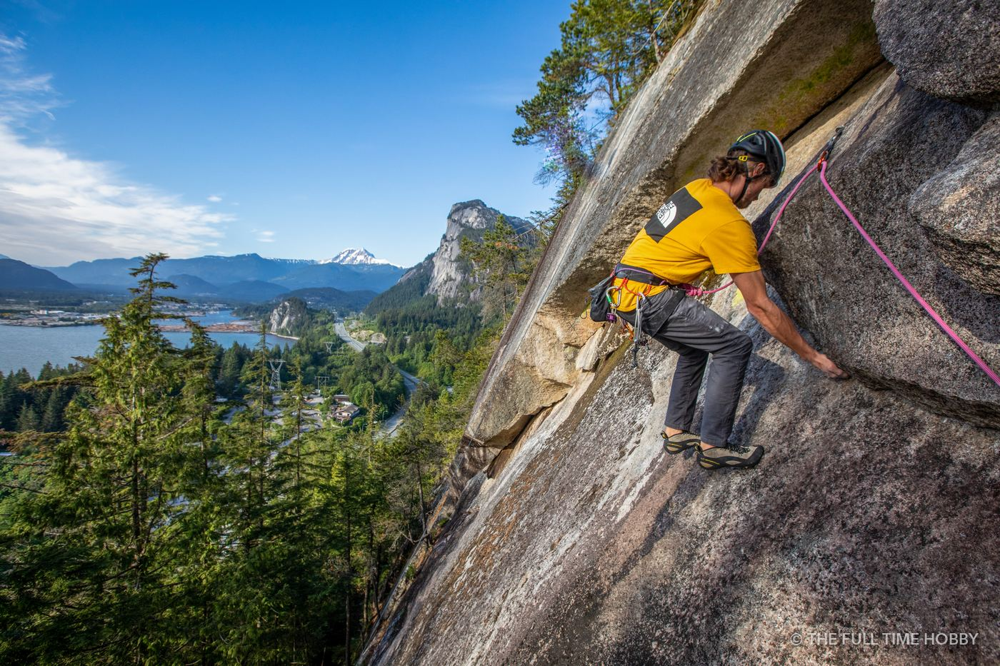
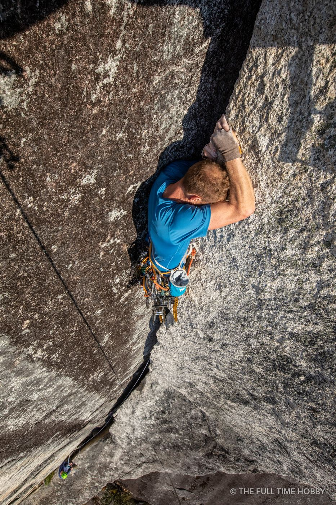
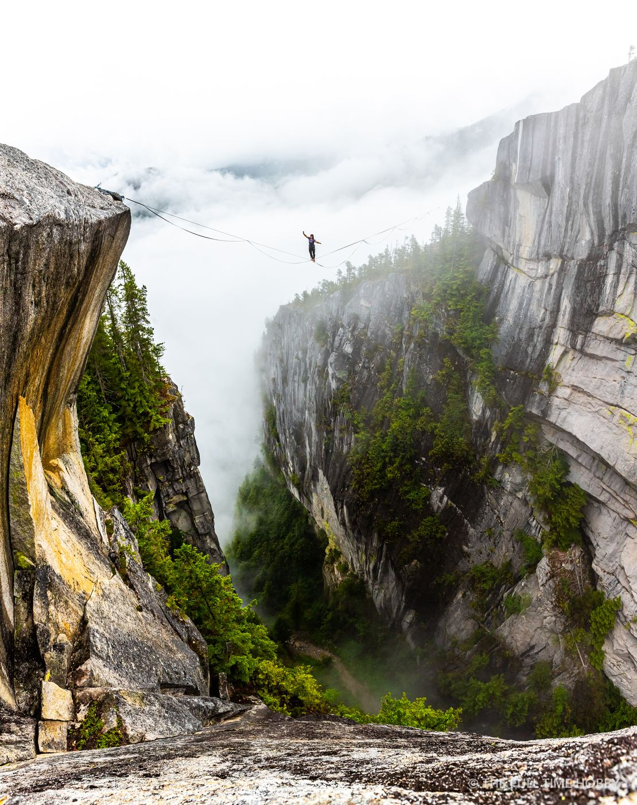
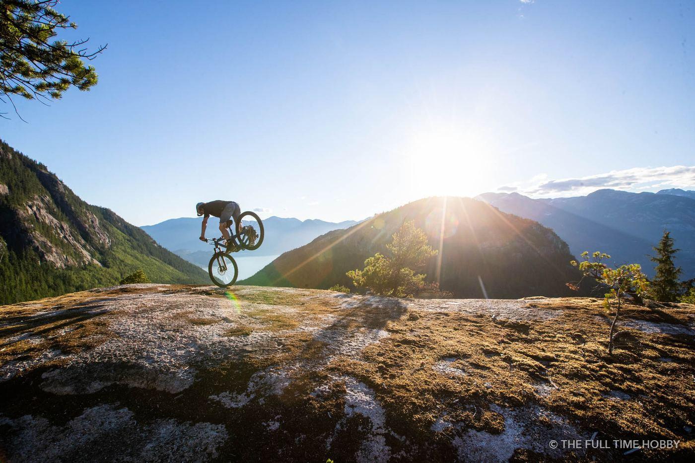
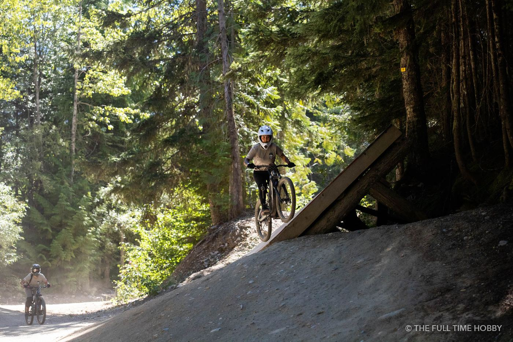
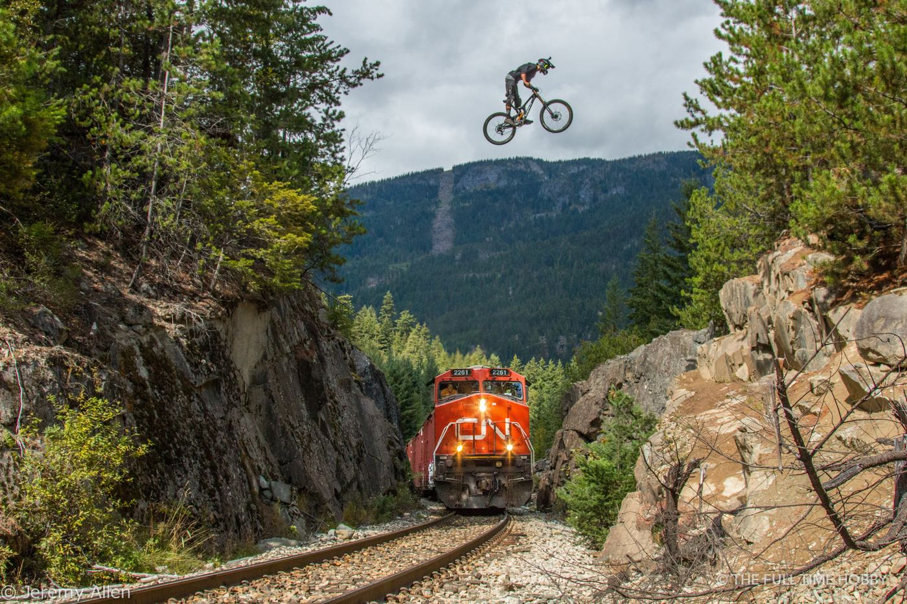
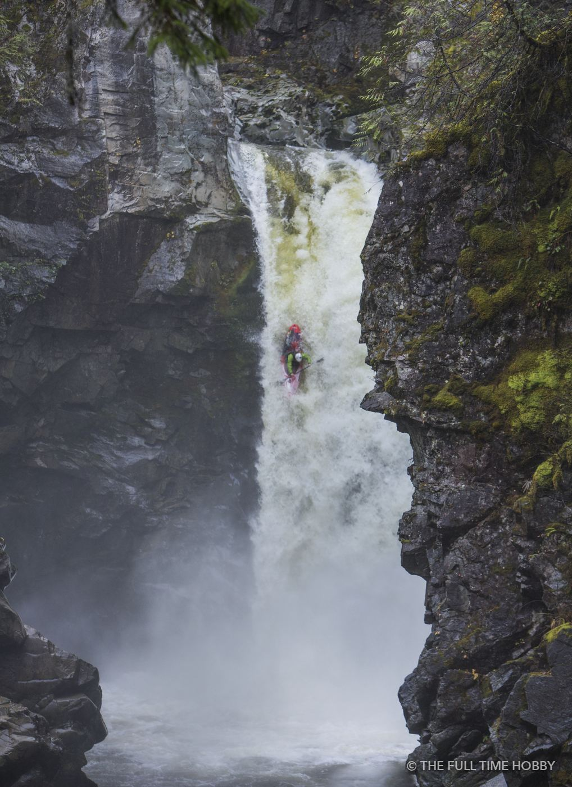

Rock climbing photography
Squamish is a granite town, and the best climbing photos usually come from above or beside the climber, not from the ground. Shooting from a fixed line next to the route gets you faces, hands and the drop below in one frame. Getting there safely takes rope skills and coordination with the climbers, so treat rigging as part of the job, not an afterthought.

- A wide lens (16–35mm) from above shows the exposure; a 70–200mm from a neighbouring ledge isolates the move.
- Climbers move slower than you’d think. 1/500s is usually enough, but go faster for dynamic moves.
- Side light in the morning or late afternoon shows the texture of the rock. Midday sun on granite gets harsh fast.

Mountain bike photography
The Sea to Sky trail network gives you everything from rock slabs to dark, rooty forest. Slabs are great for big skies and sun stars; forest berms need more light and faster glass.

- Freeze it: 1/1000s or faster for jumps and steep rolls, continuous autofocus, burst mode.
- Or drag it: in dark forest, a slower shutter with a flash freezes the rider while the background blurs.
- Sun stars: stop down to f/11–f/16 and partially hide the sun behind a rock edge or the rider.
- Respect the trail: stand somewhere riders expect you, and talk lines through before anyone drops in.


Whitewater kayaking
Whitewater is the hardest of the three to shoot well: you get one pass, the light in the canyons is low, and spray is everywhere. Scout the drop with the paddlers first so you know where the boat will land, then pick a spot with a clean background.

- A long lens (70–200mm or longer) keeps you dry and safe on the bank.
- 1/1600s or faster freezes the water; a polarizer cuts glare on wet rock.
- Wipe the front element between runs, and bring a towel.
Gear for Sea to Sky action shoots
A fast, weather-sealed body and a 70–200mm f/2.8 will cover most of this. For wildlife or far-off lines, a 150–600mm lets you work from a safe distance, and a strobe like the Godox AD600 Pro makes forest riding shots possible. All of these are available to rent in Squamish.